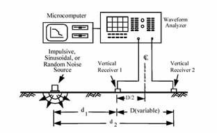
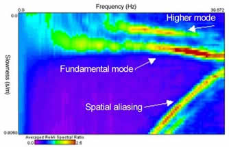

Sísmica de ondas superficiales - MASW

La metodología de la técnica sísmica pasiva ReMi está basada en las técnicas SASW (Spectral Análisis of surface Waves) y en el MASW (Multichanel Analisis of Surface Waves) que extrae del análisis espectral de las ondas sísmicas de superficie una estimación de la variación de la velocidad de propagación de las ondas S, Vs, con la profundidad
El principio de las técnicas SASW y MASW está asociado al carácter dispersivo de las ondas de Rayleigh cuando atraviesan un medio estratificado. La dispersión ocurre cuando diferentes frecuencias viajan a diferentes velocidades. Incrementando la longitud
de onda (por ejemplo bajando la frecuencia) el Trayecto-Profundidad de la onda se incrementa. Basado en esta hipótesis es posible, analizando rangos de frecuencia típicos, definir las propiedades acústicas del terreno a varias profundidades.
La exploración SASW consiste en medir la velocidad de fase de las ondas sísmicas de superficie para diferentes longitudes de onda. Estas medidas se usan para estimar la curva de dispersión del lugar estudiado. Las velocidades de fase son extraídas
por medio de comparación directa y del espectro de amplitud de cada pareja de sismómetros. Los espectros se calculan en tiempo real usando un analizador de forma de onda capaz de llevar a cabo una trasformada rápida de Fourier (Fast Fourier
Transform)
Perfiles apoyados en 24 geófonos y con separaciones tipo, entre ellos, de 2 a 10 m, permiten obtener perfiles con profundidades de investigación de hasta 50-70 m.
Esquema típico de SASW para un dispositivo compuesto por dos canales de registro. (Stokoe et al. 1994)
La Exploración MASW se desarrolló inicialmente para evitar las dificultades del uso de la técnica SASW en ambientes ruidosos. El registro simultaneo de 12 o mas canales (espaciados de 0.5 a 10.0 m) facilita una redundancia de medidas de velocidad de fase mejorando la calidad de los datos. Las diferencias de los registros SASW, pueden entonces ser procesados en busca de las propiedades de las ondas de Rayleigh. Usando un análisis armónico es posible mapear la relación velocidad de fase versus frecuencia. El modo fundamental de las ondas de superficie aparece claramente en este dominio, y puede ser analizado en asociación con la curva de dispersión.
Las investigaciones usando microsismos están originadas en los estudios y experimentos dirigidos por J. Luie de la Universidad de Nevada.
El método ReMi combina la facilidad de la técnica SASW con el alto grado de la resolución típica de las medidas MASW. Los microsismos son registrados con una serie de 12 o más geófonos de baja frecuencia sin necesidad de operar con una fuente sísmica activa. Los datos de campo pueden, generalmente, ser registrados con los clásicos sismógrafos utilizados para la sísmica de refracción, aunque hay disponibles instrumentos más delicados
Los geófonos deben tener una frecuencia natural en un rango de 4 a 14 Hz y el tiempo típico de registro es de 15 a 30 seg. Usando convertidores A/D de alta precisión (con un rango dinámico del orden de 100-144 dB) es posible registrar frecuencias tan bajas como la mitad de la frecuencia de resonancia de los geófonos. Las frecuencias buscadas tendrán un rango de 2 a 25-30 Hz. Esta anchura de banda es suficiente para definir el perfil de velocidades de onda S, Vs, hasta unos cien metros de profundidad. La onda registrada es convertida del dominio x-t (distancia-tiempo) al dominio p-f (lentitud-frecuencia), en el cual el espectro de potencia es claramente visible, (ver ejemplo de la Figura 2):
Una serie de datos coherentes son visibles en el espectro de lentitud-frecuencia (Fig. 2), así queda claramente delineado el modelo de energía del modo fundamental de las ondas de superficie (con el carácter típico dispersivo) y algunos modos superiores (ondas de superficie de orden superior, ondas compresionales, sonidos y ruidos incoherentes). En este dominio se extrae la curva del modo fundamental. El perfil de Vs se obtiene del “modelado” de la curva de dispersión
Aplicaciones
Esta técnica se puede usar, como sustitutiva de la sísmica de refracción, en zonas urbanas y en aquellos lugares donde el nivel de ruido impida la utilización de la sísmica de refracción convencional. Combinada con la sísmica de refracción, proporciona
los módulos de elasticidad dinámicos del terreno. Muy útil para la definición de cimentaciones.
Hay que tener presente que su grado de definición es claramente inferior al que proporciona la sísmica de refracción.